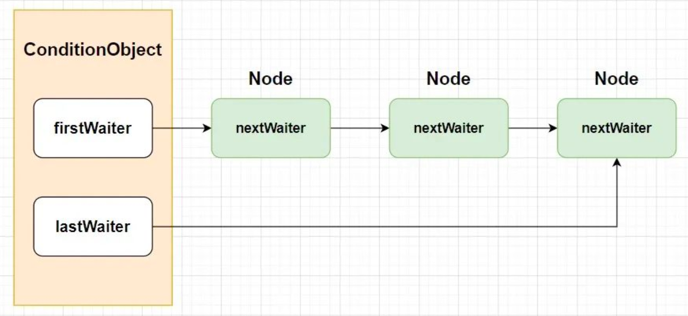
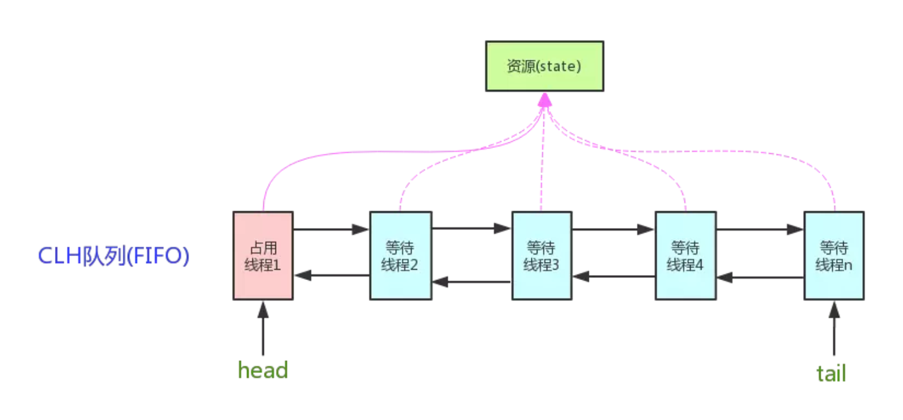
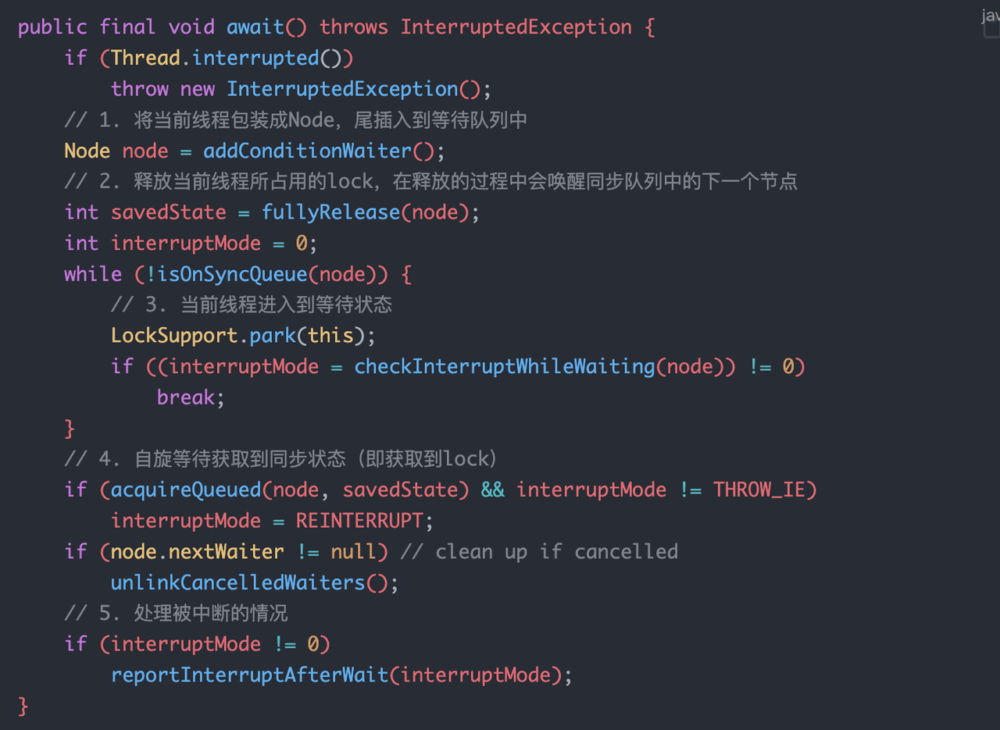
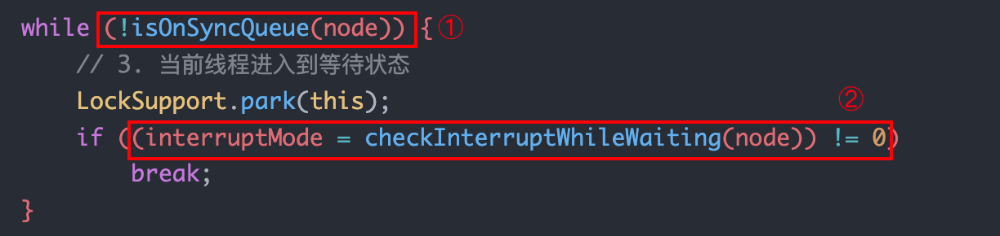
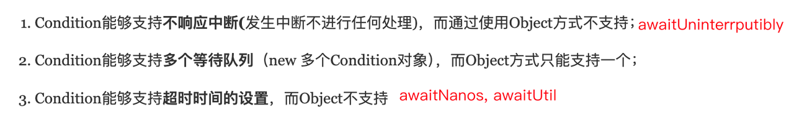
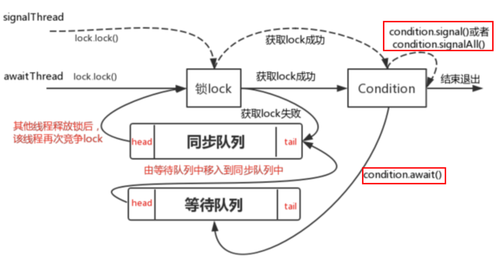
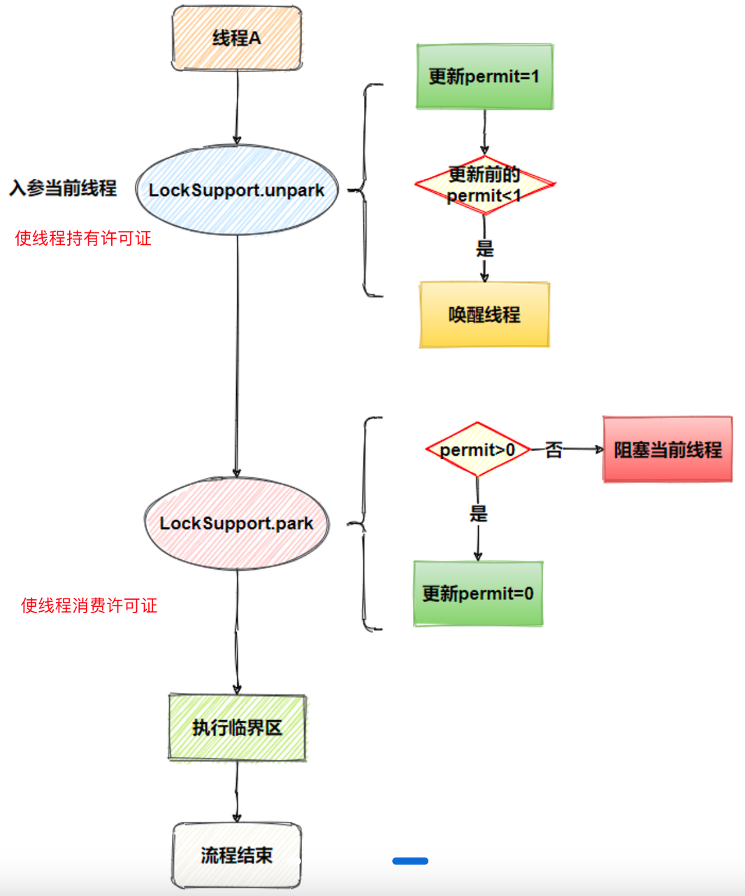
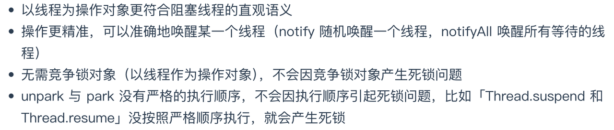

通知等待Condition
ConditonObject 是 Condition 接口的实现类，用来做线程同步的通知等待，最重要的是它维护了一个单向的等待队列，要明确它和 AQS 队列的关系。此外还介绍了 LockSupport 类，Condition 的 await 底层就是通过 LockSupport 实现的。
等待通知 Condition
Condition 的等待队列是一个不带头节点的链式队列，而 AQS 的同步队列是带头节点的。


多个 Condition 对象的多个等待队列有什么用？
同步队列和等待队列的关系：
调用 Condition 的 await 方法，会使当前持有锁的线程进入同步队列，并释放锁，线程进入等待状态。相当于将同步队列的头节点（占用线程）移动到等待队列的尾部。
调用 Condition 的 signal 方法，唤醒该线程，相当于将等待队列的头节点移动到同步队列的尾部。
Condition 是个接口，它的实现类是 ConditionObject，是 AQS 的子类。
Condition 的 await 方法
当前线程调用 Condtion.await() 方法后，会加入等待队列然后释放 lock ，直到被唤醒或线程出现中断。

如何将当前线程加入等待队列
首先将等待队列中waitStatus!=-2（只有 waitStatus 为 Condition 的线程才能在等待队列当中）的节点从队列中删除，然后通过尾插法将当前线程封装为 Node 插入到等待队列当中。
当前线程释放锁的过程
调用 AQS 的 release 方法释放同步状态，并唤醒同步队列头节点的后继节点引用的线程。
怎样从 await 方法中退出
- 想要退出 await 方法，第一个前提条件就是要退出 while 循环：

退出 while 循环有两种可能：要么当前等待线程被中断，要么由于调用了 Condition.signal / signalAll 方法唤醒线程（当前线程从等待队列移动到同步队列）。
退出 while 循环之后

await 原理
调用 Condition.await 方法的线程必须是已经获得 lock 的线程，也就是当前线程是同步队列中的头节点，调用该方法会使当前线程封装的 Node 尾插到等待队列中。

Condition 的 signal/signalAll 方法
调用 Condition 中的 signal 方法可以将等待队列中等待时间最长（由于等待队列是先进先出的，所以等待时间最长的是头节点）的节点移动到同步队列中，使得该节点有机会获得 lock。
signal 方法只会对等待队列的头节点进行操作，而 signalAll 方法则是通过一个 while 循环将等待队列所有节点移动到同步队列中。

Condition 的简单使用
Condition 就和 Object 一样，只是一个调用 await / wait 方法的一个对象（接口）。
1 | public class ConditionSignal { |
线程阻塞唤醒类 LockSupport
synchronized 会使线程阻塞，线程会进入 BLOCKED 状态，而调用 LockSupprt 类的方法阻塞线程会使线程进入到 WAITING 状态。

park 阻塞的线程不仅仅会被 unpark 唤醒，还可能会被线程中断（
Thread.interrupt）唤醒，而且不会抛出 InterruptedException 异常，所以建议在 park 后自行判断线程中断状态。
LockSupport 的优点
